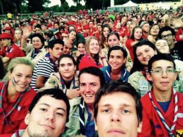

Poveștile verii: You’re Up!

Vara lui 2015 a fost din nou plină de aventuri pentru cercetașii grupului Cabana Scout, care, printre altele, au avut șansa de a participa alături de alți peste 15.000 de cercetaşi europeni din 29 de ţări, la Jamboreea Europeană de lângă Strasbourg, Franţa.
Jamboreea exploratorilor din Europa — You’re Up este cel mai mare eveniment european dedicat tinerilor. România a fost reprezentată aici de 82 de cercetași din 16 centre locale ale organizației – printre aceștia afându-se și un cercetaş aparţinând G.I. „Cabana Scout”. Pe durata jamboreei, ce a avut loc între 16-23 iulie, cercetaşii români au petrecut timp împreună, s-au familiarizat cu cercetaşi din alte ţări, au legat prietenii, făcând schimb de culturi, opinii și viziuni și construind împreună o Europă puternică şi unită pentru o lume mai bună. Ei au avut ocazia să fie deputaţi pentru o zi în Parlamentul European unde au discutat despre Europa noastră, a tuturor, descoperind diferenţele și asemănările ce fac continentul acesta atât de diversificat. Rezultatele muncii lor au fost uimitoare. Astfel a luat naştere „The Resolution for the Europe of Tomorrow” – act semnat de toti cercetaşii prezenţi, ce reprezintă promisiunea unor tineri europeni de a construi o lume bazată pe solidaritate, care este mai democratică și respectă Drepturile Omului, o lume ce permite tuturor să trăiască împreună, în armonie cu planeta noastră.
Programul evenimentului a fost foarte variat și ne-a permis să vizităm oraşul Strasbourg, să vedem faimoasa catedrală din secolul XV şi frumoasele străzi alsaciene, să ne implicăm în proiecte comunitare. dar şi să petrecem timp în camp, alături de patrulele franceze. Fiecare patrulă romănească a avut ca vecini de supcamp o patrulă franceză. Patrula alocată nouă provenea din departamentul francez Base-Lille şi includea cercetaşi din mai multe oraşe. Deşi la început am fost cam distanţi unii de ceilalţi, probabil din cauza limbii, pentru că nici noi nu ştiam franceză prea bine şi nici ei nu se descurcau cu engleza, până la sfârşit am găsit o cale de mijloc, ajungând să vorbim „frangleză”… Cu ei am stat în cea mai mare parte a timpului, cunoscându-ne prin jocuri, ateliere și cântece, cel mai cântat fiind „Dragostea din Tei”, pe care, surprinzător, ei îl ştiau la perfecţie. Într-o zi am avut activitatea denumită “Acţionează pentru alţii, acţionează pentru tine” unde a trebuit să mergem la diferite organizaţii din oraş, unde activităţile propuse aveau scopul de a servi comunitatea locală. Noi a trebuit să vopsim nişte containere şi să construim un gard de protecţie, lucruri ce s-au dovedit foarte amuzante mai ales ca am vopsit doar pentru cinci minute, deoarece se terminase vopseaua. Aceste activităţi erau foarte asemănătoare cu ceea ce facem şi în România, însă mi-aş dori să avem mai multe activităţi de genul ăsta la noi in ţară şi să devină mai cunoscute.
You’re Up a fost pentru mine primul eveniment internaţional la care am luat parte, unde am învăţat că este important ca şi noi, tinerii, să ne remarcăm şi să ne expunem punctul de vedere în viaţa de zi de zi, deoarece putem aduce o schimbare, oricât de mică ar fi ea. Am observat şi faptul că dacă reuşim să trecem peste barierele impuse de necunoaşterea unei culturi sau limbi străine, putem deveni mai uniţi, având astfel mai multe realizări. Jamboreea „You’re Up” s-a încadrat în tiparul descris de Baden Powell. A fost o întâlnire a tinerilor din întreaga lume, care a oferit experienţe şi amintiri de neuitat, marcate de prietenii formate pe viaţă, furtuni imprevizibile în mijlocul nopţii, distracţie, noi lucruri învăţate și provocări în fața cărora ne-am arătat Gata Oricând să le înfruntăm!
material realizat de Maria Lungu